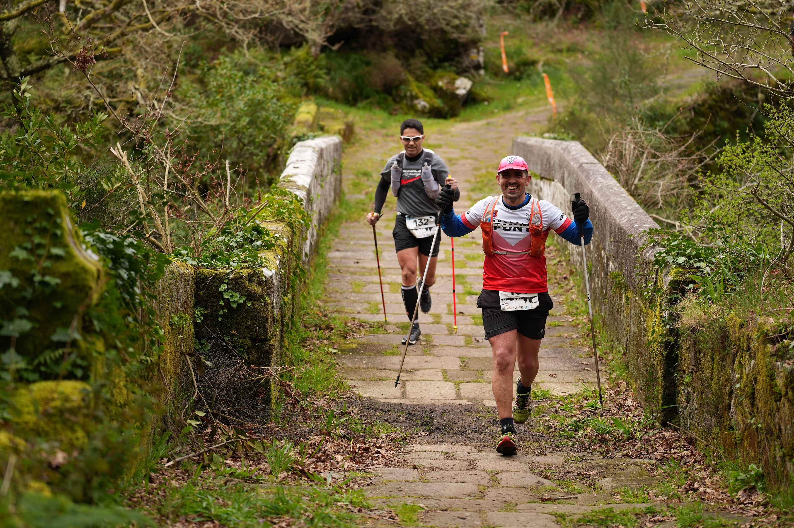

Caldas de Reis became the epicentre of Spanish trail running on March 15, as the thermal-spa town in Pontevedra stepped up from hosting the Galician championship to hosting the Campeonato de España for the first time. The third edition of the Laxe dos Bolos trail carried the national Short Trail title in individual and club competition, across sub-23, absolute and master categories, and drew hundreds of competitors, technical staff and spectators to a completely renewed 43.2km course connecting the peaks of Monte Xiabre and Monte de Santa María.
The men's absolute race went largely to script. Asturian Diego Menéndez broke clear with France's Frédéric Tranchand by kilometre 12 and made his decisive move on the final descent, completing the 43.2km and more than 2,300m of accumulated climbing in 3:34:12 — just 13 seconds off the course record. It was his first national title, and it preselects him directly for the Europeo Off-Road in Ljubljana this June. "Today's result was a reward for five months of hard training, where you only worry about performance and results," Menéndez said afterward. Alexandre Otero (Galicia) crossed second in 3:37:54, with Andalusia's Javier Gutiérrez completing the podium in 3:44:48.
The women's absolute race delivered the day's biggest surprise. María Martínez, from nearby Porriño, went out hard and held off the pre-race favourites to win in 4:50:17, a result she called validation after a difficult build-up. Murcia's Beatriz Román followed six minutes back in 4:52:54, and the Basque Country's Ainara Urrutia completed the podium in 4:55:55 — a Galician champion, on a Galician course, in front of a home crowd.

The national championship was the headline act on a day built around the whole community: a 19K and an 8K trail also ran alongside the marathon distance, and a non-competitive 12K walk gave local residents a way to take part alongside the elite field. It capped a rapid rise for the event — its second edition, in 2025, hosted only the Galician title before this year's jump to a full Spanish championship.
Image Media's team on the ground — Willi Becker, Sergio Mendes, Felipe Albano, Luis Moreira, Eduardo Almeida, Guilherme, Manu and Kika — covered all four distances across the day.